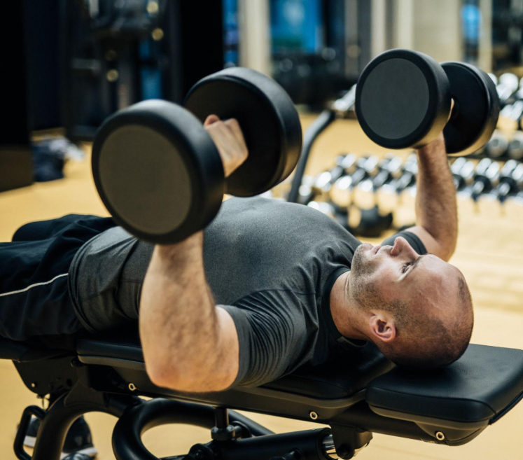

Muitas pessoas querem começar a treinar mas não sabem como.
Aqui você encontra um guia completo para te ajudar a alinhar seus objetivos além de descobrir
qual o seu tipo de dieta, organizar sua rotina e fazer de tudo para obter os melhores resultados.
Qual Seu Objetivo ?
Antes de entender o que fazer você deve definir seu objetivo.
Se seu objetivo é emagrecer, você deve montar uma dieta onde aumenta o seu gasto
e diminui o consumo calórico.
Isso é chamado de Déficit Calórico, e o ideal aqui é combinar musculação com atividades aeróbicas
conforme sua capacidade física.

Agora se seu objetivo é ganhar massa muscular, você deve fazer o inverso,
chamado de Superávit Calórico.
Aqui vamos priorizar o treino pesado com progressão gradual da carga, consumir energia para extrair o máximo no treino
e ter um descanso adequado entre os treinos.
Vale lembrar que o consumo de proteína é importante em ambos os casos.
Taxa Metabólica Basal (TMB)
A TMB (Taxa Metabólica Basal), é o cáculo de quanto você gasta de calorias no dia.
É baseado nas suas informações: peso, altura, idade e nível de atividade semanal (ex: musculação 3 a 5 vezes na semana).
É importante para calcular a quantidade de calorias necessárias pro seu consumo de acordo com seu objetivo.
Aqui está uma calculadora de TMB bem completa e fácil de usar.
Acessar Calculadora